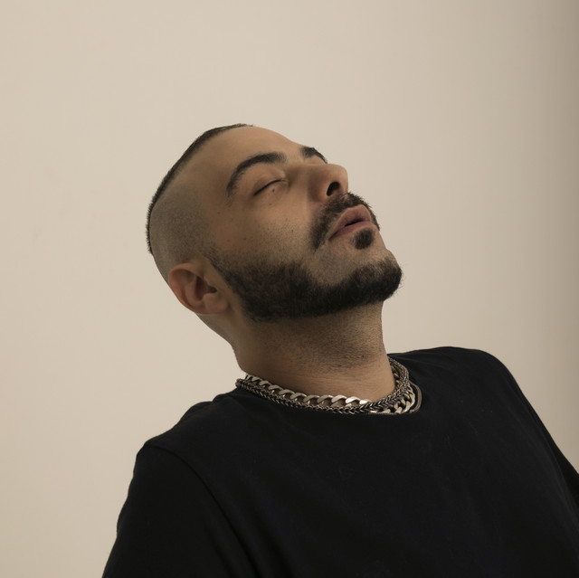
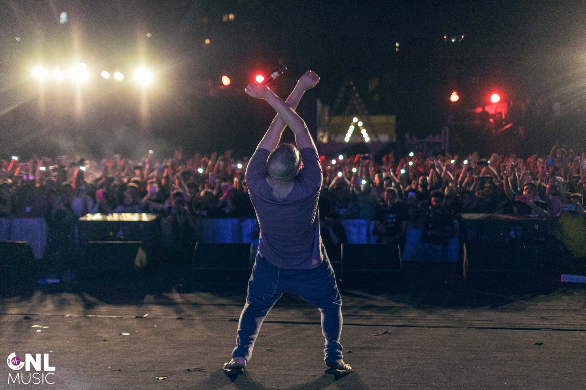
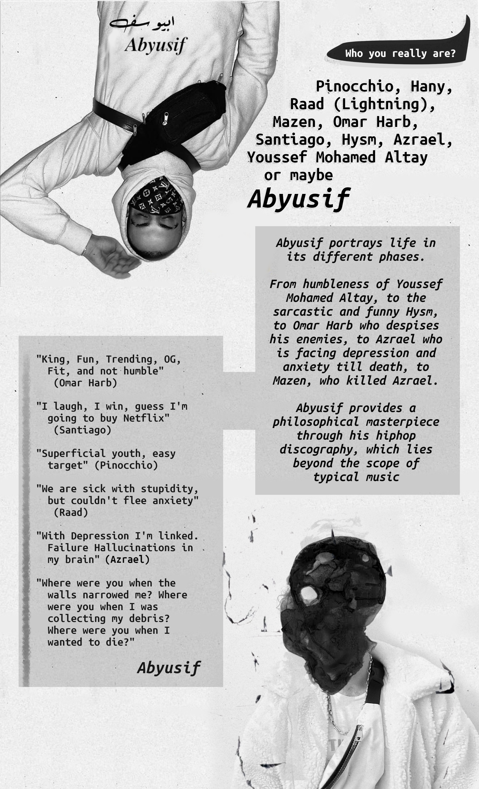

Youssef Mohamed Altay AKA Abyusif

Youssef Mohamed Altay, or Mazen, who goes by the name Abyusif is a hip-hop artist who provides an artistic and philosophical discography that explores a question “Who am I?” and “Am I the ‘now’ Abyusif or the ‘then’ Abyusif, or maybe the ‘future’ Abyusif?”. Abyusif portrays his existential journey through musical phases. He acquires multiple personalities. Each of them has a distinct writing style and explores a different aspect of what defines being a human. He is "Pinocchio" who lies and bends the truth. He is "Hysm" who loves sarcasm. He is "Omar Harb" who despises his enemies. Furthermore, he is "Azrael" who hates himself, his life, and in a continuous depression and anxiety.

I believe Abyusif’s story is precisely presenting one of the most sophisticated humanity dilemmas; whether a person can be defined by a specific stage of his life. People are changing by the time. A person can be humble today and become proud tomorrow. A successful person can fail. Abyusif is the perfect example for describing this dilemma. His phases are not “made” explicitly by him. When he think he is not bearing by his current standard, he decides to kill his past self and create a new one that suits him. The new personality Abyusif acquires is not necessarily a better one, it gets destroyed when he feels that he changed. In short, he does not “change” himself in order to suit a portrait, he changes and the variation created colorize the portrait. I have been a fan for Abyusif throughout his different phases. I believe Abyusif’s life story is a perfect illustration for the intricacy of humanity.
In the end, I leave you with this infographic.

Posted at Mon, 23 May. 2022 - 04:05:50 AM